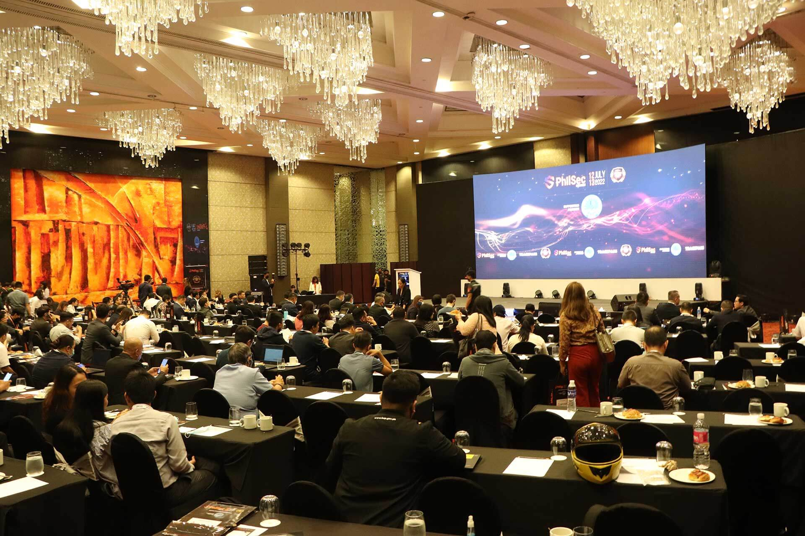
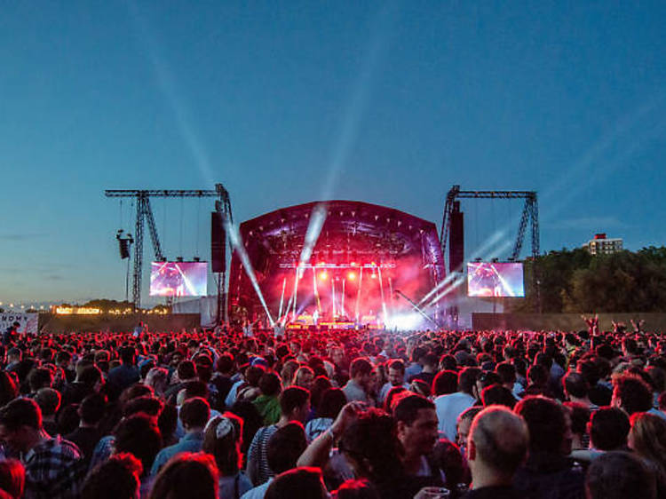
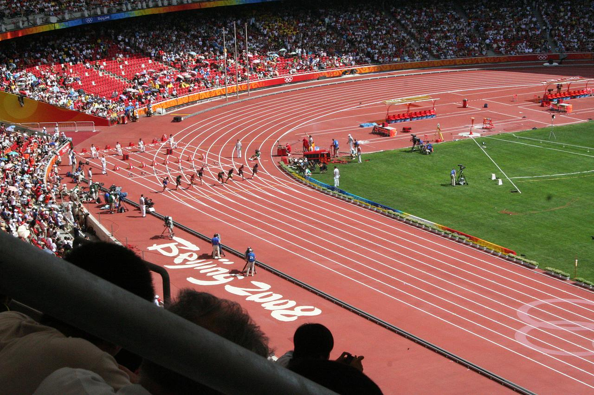
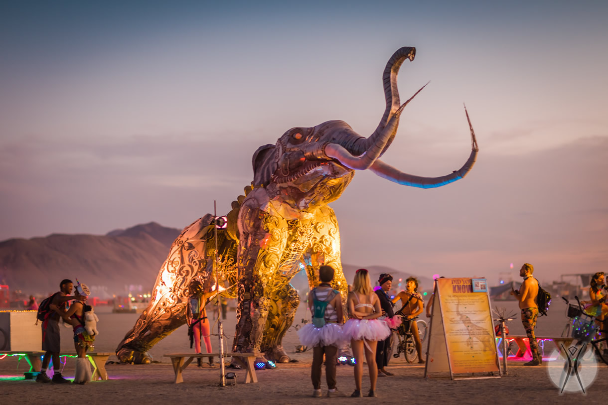

click on the links to view event webs.

CONFERENCE
A conference is an event where individuals with common interests come together to exchange ideas, knowledge, and experiences on a particular topic or subject. Conferences can be held in various fields such as science, technology, medicine, education, business, and more. They are usually organized by a group or an association and can be held in person or online.
Conferences offer a unique opportunity for people with similar interests to interact, learn from each other, and collaborate. They are an excellent way to stay up-to-date with the latest developments and trends in a specific field or industry. Conferences can include keynote speeches, presentations, panel discussions, workshops, poster sessions, and networking events. Attendees can interact with presenters, ask questions, and participate in discussions.

Trade Shows
A Trade shows are events where businesses come together to exhibit their products or services to potential customers, industry peers, and other stakeholders. These events offer an opportunity for businesses to showcase their latest innovations, network with others in the industry, and learn about new trends and developments.
Trade shows typically take place in large convention centers or exhibition halls and can last anywhere from a few days to a week. Businesses set up booths or displays that showcase their products or services and use various marketing techniques to attract visitors. Attendees can range from industry insiders and experts to curious members of the public.
Overall, trade shows are an important part of many businesses' marketing and networking strategies.

Music Festivals
Music festivals are highly anticipated events that bring together music lovers from all walks of life to enjoy a diverse range of performances by artists from different genres. These events are held annually or biannually and offer a unique opportunity for attendees to enjoy music, food, and socializing with like-minded people.
Music festivals are known for their vibrant atmosphere, energetic performances, and diverse music genres. They offer an opportunity for attendees to discover new artists and genres while enjoying their favorite bands and singers. Additionally, festivals often have a range of other activities such as food stalls, art installations, and merchandise vendors, providing a complete sensory experience.Music festivals have become a cultural phenomenon that attracts millions of people worldwide, making it an excellent opportunity for artists to gain exposure and for attendees to have unforgettable experiences.

Sports Events
Sports events are organized competitions that feature one or more sports, with participants competing against each other to determine a winner. Sports events can take many different forms, from local amateur tournaments to international championships featuring the world's top athletes.
Sports events are not only popular among spectators who come to watch the competitions, but they also have a significant economic impact on the host cities and countries. These events can generate revenue through ticket sales, sponsorships, and tourism, and often require significant investment in infrastructure and facilities to host the event.
Overall, sports events play a significant role in promoting physical activity, healthy competition, and cultural exchange among participants and spectators alike.

The Burning Man Festival
The Burning Man Festival is an annual event held in the Black Rock Desert of Nevada, USA, that attracts thousands of participants from around the world. This week-long event is known for its unique and creative culture of self-expression, communal living, and art installations.
The Burning Man Festival is not just a music festival, but a gathering of individuals who come together to celebrate the principles of radical self-expression, radical self-reliance, and communal effort. Participants are encouraged to express themselves through costumes, art installations, and other forms of creativity.
The Burning Man Festival is a one-of-a-kind event that has become an important part of contemporary culture. It embodies the values of self-expression, community, and artistic innovation, and continues to inspire and challenge those who attend. While it is not without its flaws, the festival remains a unique and powerful experience that draws thousands of participants each year.